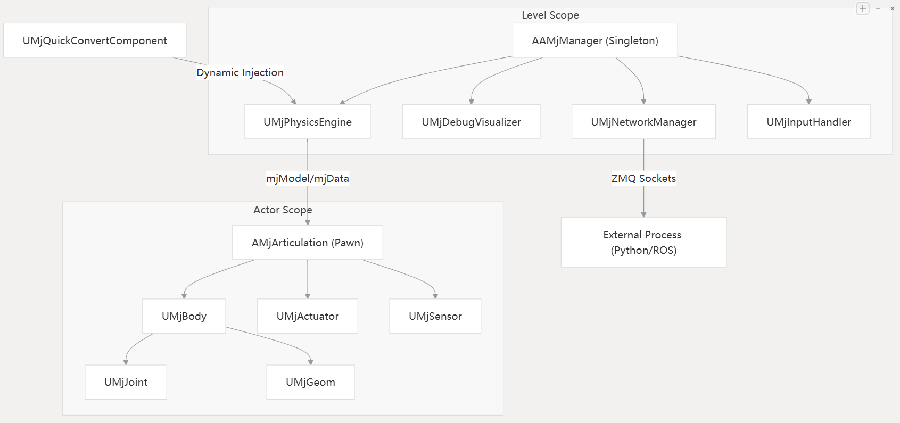
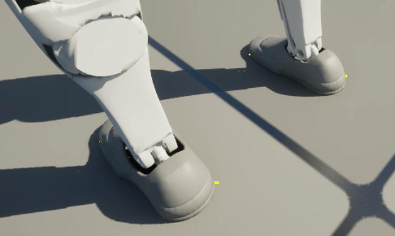
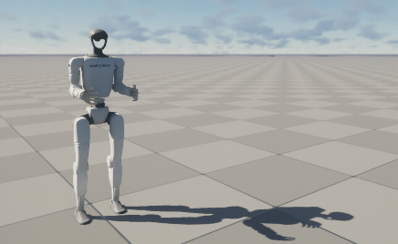
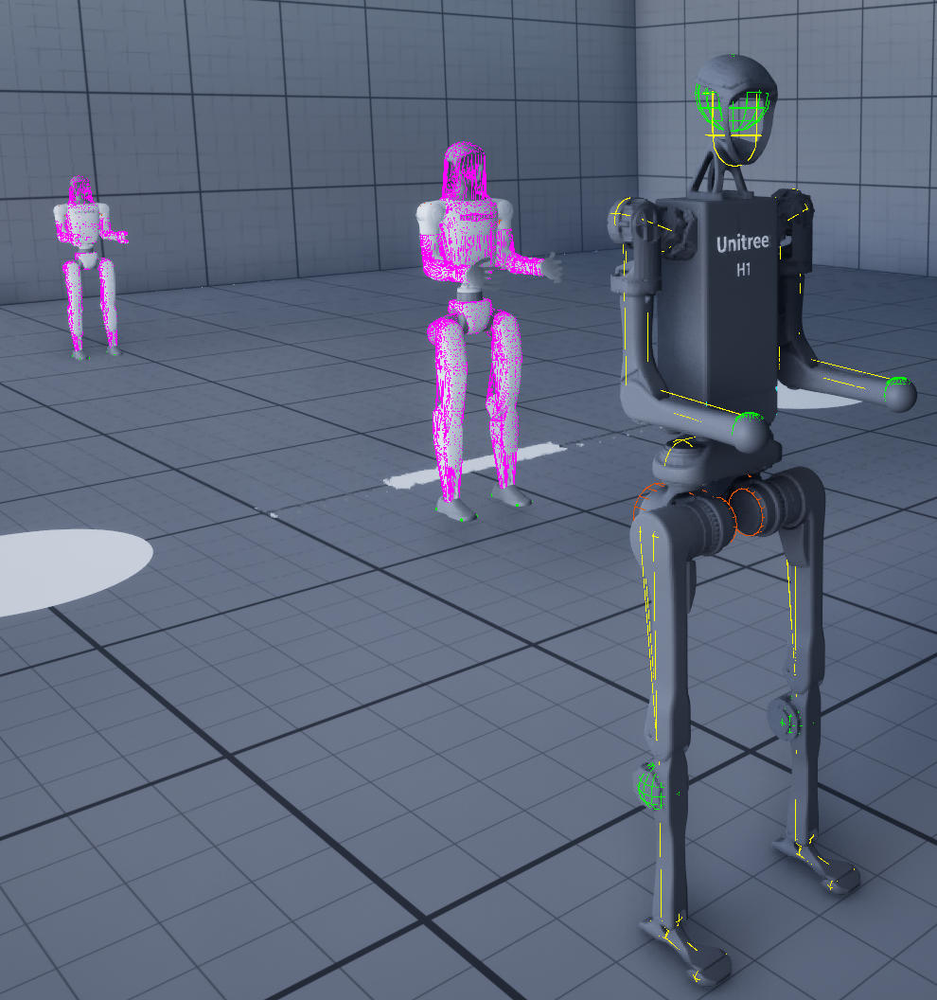
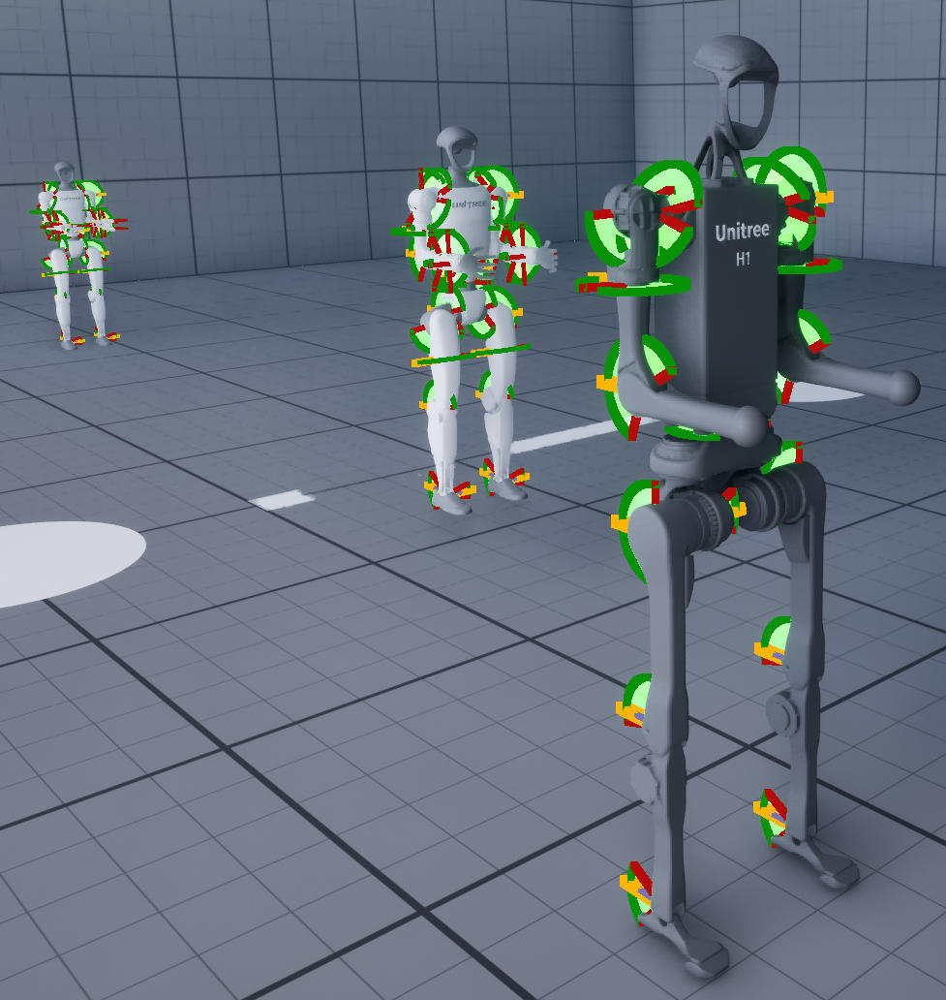
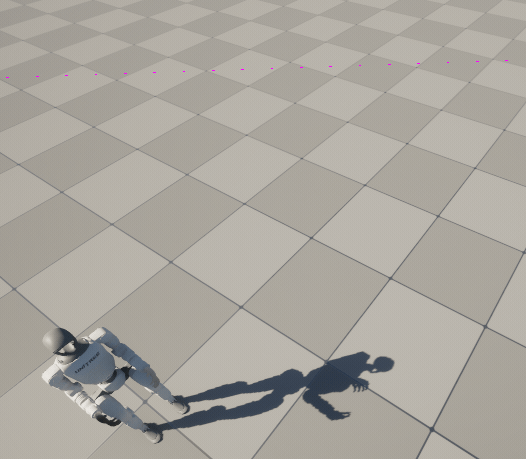
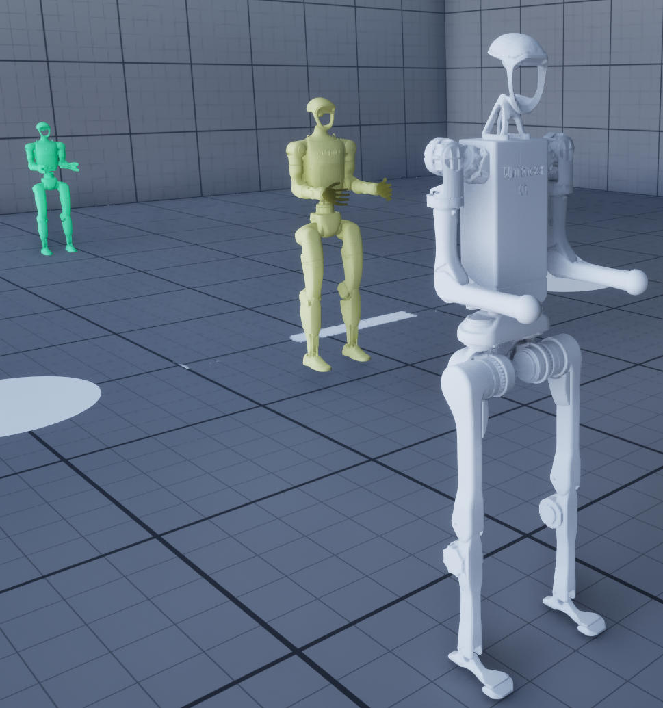

架构
概述
UnrealRoboticsLab (URLab) 将 MuJoCo 物理引擎集成到虚幻引擎中，作为编辑器插件。AAMjManager 是顶层协调器参与者（Actor），但它将核心职责委托给四个 UActorComponent 子系统：UMjPhysicsEngine（物理引擎）、UMjDebugVisualizer（调试可视化）、UMjNetworkManager（网络管理器：ZMQ 发现）和 UMjInputHandler（输入处理器）。组件系统与 MJCF 元素层级结构相对应——每个 XML 元素类型都映射到一个附加到 AMjArticulation 蓝图的 UMjComponent 子类。物理引擎运行在专用的异步线程中；游戏线程读取结果进行渲染。ZMQ 网络提供外部控制和传感器广播功能。
子系统架构
AAMjManager 将职责委托给四个 UActorComponent 子系统，这些子系统是通过构造函数中的 CreateDefaultSubobject 创建的：
AAMjManager (每个关卡一个单例协调器)
|-- UMjPhysicsEngine (物理引擎：异步物理循环，mjModel/mjData 生命周期)
|-- UMjDebugVisualizer (调试可视化：接触力、碰撞线框、关节轴)
|-- UMjNetworkManager (网络管理器：ZMQ 发现、相机流)
|-- UMjInputHandler (输入处理器：热键处理)
|
|-- AMjArticulation (robot / mechanism, possessable Pawn)
| |-- UMjBody -> UMjHingeJoint, UMjGeom, UMjSensor, ...
| |-- UMjActuator (position, velocity, motor, muscle, ...)
| '-- UMjKeyframe, UMjDefault, UMjEquality, UMjTendon
|
|-- UMjQuickConvertComponent (在任何静态网格(Static Mesh)参与者上)
|-- AMjHeightfieldActor (UE 地形 -> MuJoCo 高度场)
|-- WBP_MjSimulate (仪表板小部件)

物理引擎 UMjPhysicsEngine
文件： Source/URLab/Public/MuJoCo/Core/MjPhysicsEngine.h
拥有所有仿真状态：MuJoCo 规范结构 m_spec 、虚拟文件系统实例m_vfs、已编译的Mujoco模型m_model、激活的Mujoco模拟数据m_data 和 回调互斥量(CallbackMutex)。
处理完整的编译流程：
- 预编译(PreCompile) ：扫描场景中的 MuJoCo 组件和铰链，以填充 m_spec)
- 编译(Compile)：将聚合的 mjSpec 编译成 mjModel 并初始化 mjData
- 后编译(PostCompile)：编译后完成设置（执行器映射、PostSetup 调用）
- 应用选项(ApplyOptions)：将 Options 中的设置应用到 m_model->opt。
- 运行异步物理循环（RunMujocoAsync）：启动异步线程以执行 MuJoCo 模拟。
- 提供回调注册（RegisterPreStepCallback 在每次物理计算步骤之前调用、RegisterPostStepCallback 在每次物理计算步骤后调用 ），以便其他子系统和 ZMQ 组件可以接入步进循环而无需直接耦合。此外，还提供 StepSync 在调用线程上同步执行模拟步骤、ResetSimulation 和快照(Snapshot)/恢复(Restore)功能。
调试可视化 UMjDebugVisualizer
文件： Source/URLab/Public/MuJoCo/Core/MjDebugVisualizer.h
拥有线程安全的调试数据 DebugData（来自 MjDebugTypes.h 的 FMuJoCoDebugData ）和 调试互斥量 DebugMutex 。CaptureDebugData 注册为 UMjPhysicsEngine 的后步骤回调函数——它将物理线程上互斥锁下的接触数据复制到该线程。节拍组件 TickComponent 在游戏线程上渲染接触力箭头/点。为每种调试可视化模式提供切换方法。
网络管理器 UMjNetworkManager
文件： Source/URLab/Public/MuJoCo/Net/MjNetworkManager.h
负责零代价消息队列组件 ZmqComponents 的发现和相机注册/流传输。在 BeginPlay 期间调用 DiscoverZmqComponents() 来收集管理器参与者上的所有 UMjZmqComponent 子组件。
输入处理器 UMjInputHandler
文件： Source/URLab/Public/MuJoCo/Input/MjInputHandler.h
处理 TickComponent 中的热键。向物理引擎 UMjPhysicsEngine（暂停/重置）、调试可视化器 UMjDebugVisualizer（调试切换）和场景参与者（网格可见性、碰撞线框、相机）分发。
通讯模式
子系统通过以下方式通信：
-
回调： UMjPhysicsEngine 公开了 RegisterPreStepCallback 在每次物理计算步骤之前调用 /RegisterPostStepCallback 在每次物理计算步骤后调用。其他子系统在 BeginPlay 期间注册 lambda 表达式。
-
获取所有者 GetOwner() 方法的遍历: 子系统通过 GetOwner()->FindComponentByClass
() 访问兄弟组件（例如，UMjInputHandler 找到 UMjPhysicsEngine 来调用 Reset() ）。 -
直接访问： 外部代码可通过 Manager->PhysicsEngine->Options 、Manager->DebugVisualizer->bShowDebug 等直接访问子系统状态。AAMjManager 没有重复属性——它是一个纯粹的协调器。诸如 SetPaused()、StepSync() 和 ResetSimulation() 等蓝图可调用的便捷方法委托给 PhysicsEngine 。
模块初始化
文件： Source/URLab/Private/URLab.cpp -- FURLabModule::StartupModule()
DLL 加载顺序（顺序加载，每个 DLL 必须成功加载）：
mujoco.dll(从third_party/install/MuJoCo/bin/) — 自 MuJoCo 3.7.0 版本起，obj/stl 解码器已编译到此 DLL 中；早期版本中提供的独立obj_decoder.dll/stl_decoder.dll不应加载（插件注册冲突）。libzmq-v143-mt-4_3_6.dll(从third_party/install/libzmq/bin/)lib_coacd.dll(从third_party/install/CoACD/bin/)
搜索路径策略：首先是 third_party/install/{SubDir}/bin/（编辑器/开发版本），然后是 FPlatformProcess::GetModulesDirectory()（DLL 与可执行文件放在一起的打包版本）。
在编辑器构建中，该模块还通过 IAssetTools::RegisterAdvancedAssetCategory() 注册了“MuJoCo”资产类别。
场景声明周期
BeginPlay
文件： Source/URLab/Private/MuJoCo/Core/AMjManager.cpp -- AAMjManager::BeginPlay()
- 单例模式强制执行。 如果管理者实例 AAMjManager::Instance 已分配给其他参与者，则此实例会记录错误并返回。每个关卡仅支持一个管理者 AAMjManager。
- 子系统创建。 四个子系统（UMjPhysicsEngine、UMjDebugVisualizer、UMjNetworkManager、UMjInputHandler）通过 构造函数中的 CreateDefaultSubobject 创建。
- 自动创建 ZMQ 组件。 如果管理器参与者上不存在 UMjZmqComponent 子类，则会创建一个 ZMQ 的传感器广播者UZmqSensorBroadcaster (tcp://*:5555) 和一个 ZMQ 控制器订阅者 UZmqControlSubscriber (tcp://127.0.0.1:5556)。
- ZMQ 发现。 UMjNetworkManager::DiscoverZmqComponents() 收集管理器参与者上的所有 ZMQ 组件。
- 自动创建回放管理器。 如果关卡中不存在 AMjReplayManager，则会生成一个。
- 编译 Compile() -- 委托给 UMjPhysicsEngine 进行规范构建和 mj_compile()（见下文）。
- 回调注册。 UMjDebugVisualizer::CaptureDebugData 注册为 UMjPhysicsEngine 上的步骤后回调。
- 更新相机流状态 UpdateCameraStreamingState()。应用全局相机广播切换。
- 异步运行 Mujoco 物理模拟 RunMujocoAsync() -- 委托给 mujoco 物理引擎 UMjPhysicsEngine 来启动物理线程。
- 自动创建 MjSimulate 小部件。加载 /UnrealRoboticsLab/WBP_MjSimulate 蓝图并将其添加到视口（由 bAutoCreateSimulateWidget 控制）。
规范构建（预编译）
文件： UMjPhysicsEngine::PreCompile()
1.通过 mj_makeSpec() 创建一个新的 mujoco 规范 mjSpec（禁用弧度模式：compiler.degree = false）。
2.通过 mj_defaultVFS() 初始化虚拟文件系统(Virtual File System, VFS)。
3.通过 UGameplayStatics::GetAllActorsOfClass() 发现关卡中的所有参与者。
4.在发现循环中按顺序处理：
- 快速转换： 任何带有快速转换组件（UMjQuickConvertComponent）的参与者都会调用 Setup(spec, vfs)。
- 铰链： 任何铰链（AMjArticulation）都会调用 Setup(spec, vfs)。
- 高度场： 任何高度场参与者（AMjHeightfieldActor）都会调用 Setup(spec, vfs)。
5.ZMQ 组件的发现由 UMjNetworkManager::DiscoverZmqComponents() 在 BeginPlay 期间单独处理。
注意
发现循环会遍历所有参与者一次。同一参与者上的快速转换组件和关节都会被处理（尽管在循环逻辑中它们并非互斥，但实际上它们存在于不同的参与者上）。
铰链设置
文件: Source/URLab/Private/MuJoCo/Core/MjArticulation.cpp -- AMjArticulation::Setup()
这是规范构建中最复杂的部分。每个关节都会创建一个独立的子规范，该子规范随后会合并到根规范中。
1.创建子规范。 使用 mj_makeSpec() 创建子规范进行隔离。禁用弧度模式。通过 ApplyToSpec() 应用关节级模拟选项(SimOptions)。
2.创建封装器。 FMujocoSpecWrapper 封装子规范和虚拟文件系统(VFS)，以便于创建元素。
3.前缀。 设置为 {ActorName}_ -- 此表达式中的所有元素都将在 mjs_attach() 之后添加前缀。
1b.自动解析 bIsDefault 并从层级结构中同步 ParentClassName。即使 OnBlueprintCompiled 尚未运行，这也能确保正确性。
4.处理顺序至关重要：
-
默认 （必须放在首位）。首先调用 GetComponents
() 获取默认组件，然后对每个组件调用 m_Wrapper->AddDefault() 。其他元素引用这些默认类。 -
遍历 WorldBody。 找到 Mujoco 世界节点 UMjWorldBody 组件并正常构建主体层级结构（到子规范中）：迭代其 GetAttachChildren() 方法。对于每个子组件：
UMjBody (非默认) -> Setup(nullptr, nullptr, wrapper) (递归)；
UMjFrame (非默认) -> Setup(nullptr, nullptr, wrapper)。
-
肌腱。 添加肌腱：首先调用 GetComponents<UMjTendon>() 获取肌腱组件，然后调用 RegisterToSpec()。必须在刚体组件之后调用，以便关节名称存在。
-
传感器。 首先调用 GetComponents<UMjSensor>() 获取传感器组件，然后调用 RegisterToSpec() 注册到规范中。
-
执行器。 首先调用 GetComponents<UMjActuator>() 获取执行器组件，然后调用 RegisterToSpec() 注册到规范中。
-
接触对。 首先调用 GetComponents<UMjContactPair>() 获取接触对组件，然后调用 RegisterToSpec() 注册到规范中。
-
接触排除项。 先调用 GetComponents<UMjContactExclude>() 获取接触排除项，然后调用 RegisterToSpec() 注册到规范中。
-
等值约束(Equalities)。 先调用 GetComponents<UMjEquality>() 获取等值约束，然后调用 RegisterToSpec() 注册到规范中。注：等值约束用来强制两个独立的物理量始终保持同步或满足特定的几何关系。
-
关键帧。 先调用 GetComponents<UMjKeyframe>() 获取关键帧，然后调用 RegisterToSpec().
5.附着。 mjs_attach(attachmentFrame->element, childSpec->element, prefix, "") 通过 mjsFrame 将子模型合并到根世界刚体(world body)中。帧的 pos/quat 值由关节参与者的世界变换（转换为 MuJoCo 坐标）设置。附加完成后，m_ChildSpec 被设置为 nullptr（所有权转移给根模型）。
刚体遍历（递归）
文件： Source/URLab/Private/MuJoCo/Components/Bodies/MjBody.cpp -- UMjBody::Setup()
UMjBody::Setup() 通过封装器创建一个 mjsBody，然后迭代 GetAttachChildren()：
- 子对象 UMjBody -> 递归 Setup()
- 子对象 UMjFrame -> Frame::Setup()
- 子对象 UMjGeom, UMjJoint, UMjSensor, UMjActuator 等 -> RegisterToSpec()
网格准备（通过 PrepareMeshForMuJoCo 进行 CoACD 凸分解）在几何体配准期间进行。
编译
文件 Source/URLab/Private/MuJoCo/Core/MjPhysicsEngine.cpp -- UMjPhysicsEngine::Compile()
1.调用 PreCompile()。
2.mj_compile(m_spec, &m_vfs) 产生 mjModel。
3.失败时： 通过 mjs_getError(m_spec) 获取错误信息，记录错误日志，并显示编辑器对话框 (FMessageDialog)。返回，不创建数据。
4.成功时：
- 如果 bSaveDebugXml 为 true：将 scene_compiled.xml 和 scene_compiled.mjb 保存到 Saved/URLab/ 目录，文件路径为相对路径。
- 通过 mj_makeData(m_model) 创建 mjData.
- 调用 ApplyOptions()（将管理器级别的选项覆盖应用于
m_model->opt）。 - 调用 PostCompile()。
执行一次步进，然后重置，以确保所有衍生量（接触、约束、传感器数据）在用户看到暂停的场景之前都已完全计算和同步。
后编译 (绑定)
文件: UMjPhysicsEngine::PostCompile()
- 对每个 UMjQuickConvertComponent 调用 PostSetup(model, data)。
- 构建查找时间复杂度为 O(1) 的 m_ArticulationMap (name -> AMjArticulation*) 。
- 对每个 AMjArticulation 调用 PostSetup(model, data)。
- 对每个 AMjHeightfieldActor 调用 PostSetup(model, data)。
在 AMjArticulation::PostSetup() 函数内部：
每个组件都会调用 Bind(model, data, prefix)。UMjComponent 组件的 Bind() 方法会调用 BindToView
- 路径 1 (基于 ID): 如果设置了 m_SpecElement，则尝试通过 spec 元素进行基于 mjs_getId(m_SpecElement) 的 ID 的绑定。验证 ID 是否在模型范围内（注意：mjs_attach 将子 spec 合并到根 spec 后，mjs_getId 可能会返回过时或无效的 ID。我们在使用 ID 之前会根据模型边界对其进行验证）。
- 路径 2 (名称回退): 构造 {Prefix}{MjName}（如果 MjName 为空，则构造 {Prefix}{GetName()}），并调用 mj_name2id() 函数。
此操作会创建视图结构体（BodyView、GeomView、JointView、ActuatorView、SensorView、TendonView、SiteView），这些结构体将原始指针缓存到 mjModel/mjData 数组中。
PostSetup 还会填充组件名称映射（ActuatorComponentMap、JointComponentMap 等）和 MuJoCo-ID 映射（BodyIdMap、GeomIdMap 等），以实现 O(1) 运行时访问。
物理循环 (异步线程)
文件: Source/URLab/Private/MuJoCo/Core/MjPhysicsEngine.cpp -- UMjPhysicsEngine::RunMujocoAsync()
通过 Async(EAsyncExecution::Thread, ...) 在专用线程上运行。存储在 一个在将来某个时刻会得到任务结果的占位符 AsyncPhysicsFuture 中。
每次迭代（在 UMjPhysicsEngine 持有的 回调互斥量 CallbackMutex 锁下）：
1.检查是否重置模拟 bPendingReset -> mj_resetData() + mj_forward()，将所有执行器控制值清零，以防止重置后残留过期的命令。在游戏线程上广播 OnSimulationReset。
2.检查是否恢复到某个快照 bPendingRestore -> mj_setState() 使用 PendingStateVector + mj_forward()。
3.注册预步回调 (取代直接调用 ZMQ PreStep)。 ZMQ 组件通过 RegisterPreStepCallback() 注册。
4.对每个关节应用 ApplyControls（根据执行器值写入 d->ctrl）。
5.物理步骤：
-
如果 bIsPaused：跳过。
-
如果已经绑定 CustomStepHandler：调用它而不是 mj_step()（用于回放）。
6.已注册的步骤后回调函数 （取代直接调用 ZMQ PostStep 和调试捕获函数）。ZMQ 组件和 UMjDebugVisualizer::CaptureDebugData 通过 RegisterPostStepCallback() 进行注册。
7.OnPostStep 委托 （回放录制在此处捕获状态）。
时序： 释放互斥锁后，循环会进行小时间步长精确计时的自旋等待（FPlatformProcess::YieldThread()），直到 TargetInterval / SpeedFactor 的时间过去。SimSpeedPercent 控制速度因子。
游戏线程 (节拍信号)
- 向后兼容的指针同步。 从 UMjPhysicsEngine 复制 m_model/m_data，以便读取 AAMjManager::m_model 的旧版调用者仍然可以正常工作。
- 热键处理和调试绘图分别委托给 UMjInputHandler 和 UMjDebugVisualizer（两者都通过各自的 TickComponent 发送节拍）。
UMjInputHandler::TickComponent
每帧处理热键并分派至相应的子系统：
- 1 -> 切换调试接触的可见性 DebugVisualizer->ToggleDebugContacts()：对于人形机器人显示的是脚掌位置的接触力箭头

- 2 -> 切换视觉网格可见性：显示或隐藏场景参与者

- 3 -> 切换铰链碰撞线框（场景参与者）

- 4 -> 切换关节调试轴（场景参与者）

- 5 -> 切换快速转换碰撞线框（场景参与者）

- 6 -> 调试着色器模式

- 7 -> 显示肌腱
- P -> 暂停/继续：PhysicsEngine->TogglePause()
- R -> PhysicsEngine->Reset()
- O -> 切换轨道和关键帧相机（场景参与者）
- F -> 发射脉冲发射器（场景参与者）
UMjDebugVisualizer::TickComponent
如果启用调试模式，则读取 DebugData（可视化器上受 DebugMutex 保护），并通过 DrawDebugDirectionalArrow / DrawDebugPoint 绘制接触力箭头和点。
变换同步 在 UMjBody::TickComponent() 中进行：
- 如果 bDrivenByUnreal：将 UE 世界变换写入 MuJoCo 动作捕捉模型（d->mocap_pos，d->mocap_quat）。
- 否则：从 BodyView 读取 MuJoCo xpos/xquat，并通过 SetWorldLocationAndRotation() 设置 UE 世界变换。
线程安全
| 互斥量/机制 | 所有者 | 保护 | 使用者 |
|---|---|---|---|
| 回调互斥量 CallbackMutex (临界区 FCriticalSection) | UMjPhysicsEngine | 物理步进期间的 m_model, m_data | 物理线程（主锁）, StepSync() |
| 调试互斥量 DebugMutex (临界区 FCriticalSection ) | UMjDebugVisualizer | 调试数据DebugData（接触可视化缓冲区） | 物理线程写入（通过步骤后回调），游戏线程读取 |
| 相机互斥量 CameraMutex (临界区 FCriticalSection) | UMjNetworkManager | ActiveCameras 数组 | 在任何线程中注册/取消注册 |
| bPendingReset (std::atomic |
UMjPhysicsEngine | 复位信号 | 游戏线程设置，物理线程读取/清除 |
| bPendingRestore (std::atomic |
UMjPhysicsEngine | 恢复信号 | 游戏线程设置，物理线程读取/清除 |
| bIsPaused（非原子操作，但仅从游戏线程写入） | UMjPhysicsEngine | 暂停状态 | 由物理线程读取 |
| bShouldStopTask (std::atomic |
UMjPhysicsEngine | 关闭信号 | 游戏线程在 EndPlay 中设置，物理线程进行检查 |
| UMjActuator::InternalValue / NetworkValue | UMjActuator | 每个执行器控制值 | 跨线程的原子读写操作 |
组件系统
基类：UMjComponent
文件： Source/URLab/Public/MuJoCo/Components/MjComponent.h
继承自 USceneComponent 和 IMjSpecElement 。所有 MuJoCo 元素组件均派生自此基类。
关键成员:
- m_SpecElement (mjsElement*) -- 在 RegisterToSpec() 期间创建的 MuJoCo spec 元素的指针，用于 Bind() 中的 ID 解析。
- m_ID (int) -- MuJoCo 对象 ID，在 Bind() 期间解析。
- m_Model, m_Data -- 缓存指针，在 Bind() 期间设置。
- MjName (FString) -- 原始 MJCF 名称，用于交叉引用。
- bIsDefault (bool) -- 如果为 true，则此组件为默认模板，运行时查找时会跳过。
关键方法:
- RegisterToSpec(FMujocoSpecWrapper&, mjsBody*) -- 创建规范（spec）元素。子类会重写此方法。
- Bind(mjModel, mjData, Prefix) -- 将此组件绑定到运行时 MuJoCo 仿真。解析 ID 并缓存模型/数据指针。
- BindToView
(Prefix) -- 创建 View 结构体的模板方法。首先尝试使用 mjs_getId()（带有边界验证），如果失败则回退到 mj_name2id()。 - ResolveDefault(mjSpec*, ClassName) -- 通过类名查找 Mujoco 默认类 mjsDefault 的静态辅助方法。如果失败则回退到全局默认值。
- FindEditorDefault() -- 编辑器时解析默认值，无需 mjSpec。
- SetSpecElementName() -- 通过封装器去重为 spec 元素分配唯一名称。
查看结构体
文件： Source/URLab/Public/MuJoCo/Utils/MjBind.h
轻量级结构体，将原始指针缓存到 mjModel/mjData 数组中，实现零开销运行时访问。每个结构体都有一个 static constexpr mjtObj obj_type 用于模板分发。
| 结构体 | 对象类型 | 关键指针 |
|---|---|---|
| 刚体视图 BodyView | mjOBJ_BODY | xpos, xquat, 施加在该 body 上的外部广义空间力 xfrc_applied, 质量 mass, 动作捕捉刚体的编号 mocap_id |
| 几何视图 GeomView | mjOBJ_GEOM | xpos, xmat, size, type, contype, conaffinity, dataid |
| 关节视图 JointView | mjOBJ_JOINT | 广义位置 qpos, qvel, qacc, 关节锚点在世界坐标系下的位置 xanchor, xaxis, 关节允许运动的范围限制 range, 关节的弹簧刚度 stiffness, 腱/绳索的高阶刚度多项式 stiffnesspoly, 肌腱的阻尼 damping, 肌腱的高阶/非线性阻尼多项式系数 dampingpoly |
| 执行器视图 ActuatorView | 执行器对象 mjOBJ_ACTUATOR | 指向执行器控制输入值的指针 ctrl, force, length, ctrlrange, 执行器的增益参数数组 gainprm, biasprm |
| SensorView | mjOBJ_SENSOR | data (指向传感器数据 sensordata 的指针 ), dim, adr, type |
| TendonView | mjOBJ_TENDON | length, velocity, stiffness, stiffnesspoly, damping, dampingpoly, range |
| SiteView | mjOBJ_SITE | xpos, xmat, size, type, body_id |
BodyView 还提供了遍历方法：Bodies()、Geoms() 和 Joints()，用于遍历已编译的模型层次结构。
独立的模板函数 bind
默认系统
UMjDefault 组件存储的模板属性与 MJCF 的
坐标系统
MuJoCo使用右手坐标系，Z 轴朝上，单位为米。而虚幻引擎使用左手坐标系，Z 轴朝上，单位为厘米。
位置转换 (MjUtils::MjToUEPosition / UEToMjPosition): - X -> X, Y -> -Y, Z -> Z - 比例：MuJoCo 米 * 100 = 虚幻引擎的厘米
旋转转换 (MjUtils::MjToUERotation / UEToMjRotation): - MuJoCo四元数 [w, x, y, z] -> FQuat，其中 X 和 Z 分量取反（以处理手性翻转）。
所有转换工具都在 Source/URLab/Public/MuJoCo/Utils/MjUtils.h 文件中。
导入与用于自制的铰链
创建 AMjArticulation 有两种方法：
1. 从 MJCF XML 导入（拖放式）： - 使用 UMujocoImportFactory -> UMujocoGenerationAction - 所有组件均通过 XML 解析自动生成 - 默认类层次结构保留为 UMjDefault 组件 - MuJoCoXMLFile 属性用于存储源 XML 路径 - 导入到虚幻内容浏览器(Content Browser)的网格资源
2. 用户从零开始构建（右键点击 -> 新建 MuJoCo 关节）： - 使用 UMjArticulationFactory -> UMujocoGenerationAction::SetupEmptyArticulation() - 创建组织层次结构（定义、默认值、执行器、传感器等） - 用户在蓝图编辑器中手动添加组件 - 无XML文件 — 组件直接编写
这两种路径都会产生相同的结果： 一个包含 UMjComponent 子类的 AMjArticulation 蓝图。在运行时，两者都会经历相同的设置(Setup)->编译(Compile)->绑定(Bind)流程。规范系统并不知晓或关心组件是如何创建的。
特殊情况标志
| 标志 | 该标志所在的类 | 目的 |
|---|---|---|
| bIsDefault | UMjComponent | 在 <default> 块内标记模板组件。这些组件在运行时发现（GetRuntimeComponents）时被排除，在遍历主体时也被排除在 RegisterToSpec 之外。 |
| bIsQuickConverted | UMjBody | 由 Quick Convert 设置。在时间步同步期间启用网格枢轴偏移校正（UE 网格可能具有 MuJoCo 不知道的偏心枢轴）。 |
| bDrivenByUnreal | UMjBody | 实现单向耦合：UE 变换驱动 MuJoCo 运动捕捉体。用于以虚幻引擎为准的运动学对象。 |
| bFromToResolvedHalfLength | UMjGeom | 在导入过程中，当 fromto 属性解析为位置/四元数/尺寸值时，设置此属性。控制 ExportTo 如何写入尺寸值——仅写入半长槽，半径值则来自默认链。 |
导入管线
文件： Source/URLabEditor/Private/MujocoImportFactory.cpp, Source/URLabEditor/Private/MjArticulationFactory.cpp
步骤
1.用户将一个 .xml 文件拖入内容浏览器(Content Browser)。
2.UMujocoImportFactory::FactoryCreateFile() 触发，把一个 MuJoCo 的 XML 文件导入到 Unreal 编辑器中，并自动生成一个基于 AMjArticulation 的蓝图资产。
3.网格预处理： 自动运行 Scripts/clean_meshes.py（Python子进程）。
-
检测 Python 安装情况，若未安装则自动安装 trimesh 。
-
解析 MJCF XML 文件以查找所有网格资产，将所有参考网格（OBJ, STL）都转换为 GLB (GL Transmission Format Binary)。
-
使用计数器后缀重命名冲突的文件，并更新 XML。
-
将所有网格转换为 GLB 格式（保留 UVs，移除嵌入纹理）。
-
生成带有更新网格引用的 _ue.xml 文件。
-
每一步都有优雅的回退机制——如果 Python/trimesh 缺失，则使用原始 XML。
4.创建一个 AMjArticulation 蓝图。
5.UMujocoGenerationAction::GenerateForBlueprint() 通过四个步骤解析 XML：
-
第一步： 解析资产（带缩放的网格、带文件路径的纹理、带 RGBA/纹理引用的材质）。
-
第二步： 解析默认设置（类层次结构 — 创建带有子几何体/关节/执行器模板的 UMjDefault 组件）。
-
第三步： 递归导入世界刚体 worldbody（刚体、几何体、关节、位点成为附加在蓝图层次结构中的 UMjComponent 子类）。
-
第四步： 导入执行器、传感器、肌腱、equalities、关键帧、接触对/排除对。
6.网格导入使用虚幻引擎的资产工具，格式优先级为：FBX > GLB > OBJ。网格保存在 /Meshes/ 子文件夹中，以避免纹理名称冲突。
7.以 XML 材质名称（所有引用 "white" 的几何体共享的 MI_white）为键，创建作为共享实例的材质。
8.纹理已导入到资源文件夹，并已应用于带有 bUseTexture 标志的材质实例。
9.通过 FKismetEditorUtilities 进行最终蓝图编译。
规范化导入
为了保持一致性，导入器对多个 MJCF 构造进行了标准化处理：
FromTo分辨率： 几何体和场景中的所有 fromto 属性在导入时都会被分解为明确的 pos（位置）、quat（四元数）和 size（尺寸）：
pos= fromto 线段的中点quat= 将局部 + Z 轴与 fromto 方向对齐的旋转size[1]= 半长（适用于胶囊/圆柱体），size[2]适用于长方体/椭球体size[0]（半径）保持不变 — 继承自默认值- 设置了
bFromToResolvedHalfLength标志，以便ExportTo知道仅写入半长插槽 - 组件的相对变换被设置为实现精确的编辑器可视化
默认视觉变换类： 当几何体从默认类（例如，class="visual_zflip"且quat="0 0 0 1"）继承变换时，导入器会遍历默认层次结构以查找该变换，并将其作为视觉偏移量应用于UStaticMeshComponent子级，而非UMjGeom组件本身（否则会通过规范默认系统进行双重应用）。
朝向处理： 所有 MJCF 旋转（欧拉角、轴角、四元数、xy轴、z轴）在导入时都会使用MjOrientationUtils转换为UE四元数。会遵循<compiler>设置（angle="radian"/"degree"，eulerseq）。
网格名称去重： 若规范中已存在某个网格/刚体/几何体的名称，MjSpecWrapper::GetUniqueName()方法会在该名称后添加_1、_2等后缀。
导出管线（运行时）
每个组件的RegisterToSpec()方法都会通过FMujocoSpecWrapper写入一个mjsElement。组件的ExportTo()方法会填充属性（类型、大小、位置、四元数、摩擦力等）。
覆盖标志系统
每个可导出的属性都有一个对应的bOverride_*布尔值。在ExportTo()函数中：
- 如果
bOverride_X == true：则该属性将被显式写入 spec 元素。 - 如果
bOverride_X == false：则不写入属性，允许MuJoCo的默认系统提供值。
这对于往返保真度至关重要：如果导入的 geom 具有class="collision"属性，并且该属性从其默认值继承了group=3，则不应明确写入group=3——因为如果用户之后更改了默认值，这将绕过默认值。
FromTo 导出
对于bFromToResolvedHalfLength == true的几何体：
- 如果
bIsDefault为真：将原始 fromto 写入默认值的几何体（MuJoCo负责处理默认值的大小分辨率）。 - 如果实例中
bOverride_Size == false：则仅写入半长槽，让默认值提供半径。 - 如果实例中的
bOverride_Size == true：则明确写入所有大小槽。
规格附件
mjs_attach() 函数将子规格与关节前缀合并到根中，从而支持具有唯一命名空间的多关节场景。附加后，所有元素名称都会加上前缀（例如，pelvis 变为 g1_C_1_pelvis。运行时名称查找会使用此前缀。
ZMQ 网络
文件： Source/URLab/Private/MuJoCo/Net/ZmqSensorBroadcaster.cpp, ZmqControlSubscriber.cpp
用于最小延迟的二进制发布/订阅协议。
话题：
{prefix}/joint/{name}-- 关节状态{prefix}/sensor/{name}-- 传感器读取{prefix}/base_state/-- 根刚体的姿态{prefix}/twist-- 扭转指令速度{prefix}/control-- 执行器控制值
时间：
- 传感器广播：在物理线程上执行
PostStep()函数。 - 控制接收：在物理线程上执行
PreStep()。
控制源： EControlSource 枚举 (ZMQ 或 UI). 在AAMjManager::ControlSource 上全局设置，并通过AMjArticulation::ControlSource进行每个关节的覆盖设置。
信息广播： 包含执行器名称、ID 和范围的 JSON 有效负载。定期发送以进行客户端发现。
快速转换
文件： Source/URLab/Public/MuJoCo/Components/QuickConvert/MjQuickConvertComponent.h
UMjQuickConvertComponent 可附加到任何静态网格（Static Mesh）参与者上，实现一键物理集成。
- 在
Setup()函数执行时，会在根世界物体上创建一个MjBody+MjGeom。 - 使用可配置阈值运行 CoACD 凸分解。
- 将视觉网格（组 2）与碰撞网格（组 3）分开。
- 支持静态、动态或运动捕捉刚体模式。
高度场
文件： Source/URLab/Public/MuJoCo/Components/QuickConvert/AMjHeightfieldActor.h
AMjHeightfieldActor 通过射线投射采样虚幻（Unreal）景观几何体。
- 可配置的分辨率、跟踪通道和参与者白名单。
- 使用
bTraceComplex进行精确的网格采样。 - 在世界刚体上注册为
mjsHField+ 静态几何体。 - 二进制缓存（已保存
Saved/URLab/）用于快速重新编译。
重放系统
文件： Source/URLab/Public/Replay/MjReplayManager.h, MjReplayTypes.h
- 记录：
OnPostStep回调函数捕获每帧每个关节的qpos/qvel。 - 回放：
CustomStepHandler替换mj_step()，应用记录的qpos，然后调用mj_forward()。 - CSV 导入： 支持外部轨迹数据，并自动进行关节名称匹配。
- 快照/恢复： 通过
mj_getState()/mj_setState()进行完整状态捕获。游戏线程写入bPendingRestore，然后设置bPendingRestore；物理线程在下一次迭代时应用。 - 线程安全： 播放时间是
std::atomic。CustomStepHandler在CallbackMutex内部运行。
控制器系统
文件： Source/URLab/Public/MuJoCo/Components/Controllers/
UMjArticulationController-- 抽象基类。重写ComputeAndApply()以实现控制逻辑。UMjPDController-- 具有每个执行器 Kp/Kv/torque 限制的 PD 伺服控制器。UMjPassthroughController-- 将控制值直接传递给d->ctrl。UMjKeyframeController-- 通过平滑插值循环播放预设的关键帧序列。
发现： 在 PostSetup() 函数执行期间，关节系统调用了 FindComponentByClass<UMjArticulationController>() 函数。
绑定： 通过 FActuatorBinding 结构体将执行器 ID 映射到 qpos/qvel 地址，以便高效访问。
ApplyControls: 如果控制器已绑定，则 AMjArticulation::ApplyControls() 会委托给该控制器的 ComputeAndApply() 函数；否则，将直接将执行器值写入 d->ctrl。
输入系统
文件： Source/URLab/Public/MuJoCo/Input/MjInputHandler.h, Source/URLab/Public/MuJoCo/Input/MjTwistController.h, Source/URLab/Public/MuJoCo/Net/MjInputMapping.h
MjInputHandler
UMjInputHandler 是 AAMjManager 上的一个 UActorComponent 子系统。它处理 TickComponent 中的调试/模拟热键，并将其分发给相应的子系统或场景参与者。有关完整的键映射，请参阅上文的“游戏线程（Tick）”。它通过GetOwner()->FindComponentByClass<T>()访问同级子系统。
MjTwistController
已自动添加到 Possess 的关节表达中。捕捉 WASD/游戏手柄输入，并存储扭曲命令（vx、vy、yaw_rate），以便通过 ZMQ 进行广播。
- 使用虚幻引擎的增强输入系统（
UInputAction、UInputMappingContext） - 在
PossessedBy()中添加了输入上下文，在UnPossessed()中移除了输入上下文 GetTwist()返回当前的扭转向量（线程安全，由物理线程上的 ZMQ 广播器读取）- 支持 10 个动作键（映射到位掩码），用于离散命令
MaxVx、MaxVy、MaxYawRate属性对输出进行限制
MjInputMapping
可配置的执行器到输入绑定系统。将增强输入动作直接映射到执行器的 SetControl 调用。每个 FMjInputBinding 都指定了：
- 目标执行器组件
- 输入动作参考
- 缩放倍率
- 绑定在触发事件上调用
SetControl(value * scale)
模拟选项
文件： Source/URLab/Public/MuJoCo/Core/MjSimOptions.h
FMuJoCoOptions 将 MuJoCo 的 mjOption 字段封装为 UPROPERTY（时间步长、重力、积分器、求解器、迭代次数等）。在两种具有不同语义的上下文中使用：
关于 AMjArticulation（儿童专用选项）
- 在调用
mjs_attach()函数之前，所有字段都会被写入子规范的mjOption中 bOverride_*开关被忽略——每个值都无条件应用- 这定义了该机器人模型的“原生”物理设置
关于 AAMjManager（编译后覆盖）
- 通过
ApplyOptions()函数，作为m_model->opt的后编译覆盖 - 仅应用
bOverride_* = true的字段 bOverride_* = false的字段将保留编译模型中的内容（来自关节规格或 MJCF 默认值）- 在
mj_compile()成功后调用一次
解析顺序
- MuJoCo 的内置默认设置（来源于XML中的
<option>或 MuJoCo 的硬编码默认设置） - 在设置过程中，Articulation 的
SimOptions会覆盖子规格选项 - 编译后，Manager的
Options会选择性地覆盖m_model->opt字段
这意味着：一个关节可以在其 SimOptions 中将时间步长设置为 0.002 timestep = 0.002，如果管理器上的 bOverride_Timestep = true，则管理器可以将其覆盖为时间步长 timestep = 0.005。
关键帧 Keyframes
文件： Source/URLab/Public/MuJoCo/Components/Keyframes/MjKeyframe.h
UMjKeyframe 组件存储来自 MJCF <keyframe> 部分的命名模拟状态快照：
Time-- 模拟时间Qpos-- 关节位置（双精度数组，大小为 nq）Qvel-- 关节速度（双精度数组，大小为 nv）Act-- 执行器激活Ctrl-- 控制值MocapPos/MocapQuat-- 运动捕捉身体变换
在设置过程中（在设置物体/关节之后）根据规范进行注册。在运行时，AMjArticulation::ResetToKeyframe() 会将机器人瞬移到指定的关键帧，而 HoldKeyframe() 则通过 ctrl 键或直接注入 qpos 来持续保持姿势。MjSimulate 窗口小部件通过关键帧下拉菜单和重置/保持/停止按钮来展示这些功能。
编辑工具
- MjSimulate 控件 (
WBP_MjSimulate): 物理选项、每个执行器的滑块、调试可视化切换、重播控制、控制按钮。在 BeginPlay 时自动创建。 - ValidateSpec:
AMjArticulation上的蓝图编译挂钩。创建一个临时规范，运行mj_compile()函数，并在不影响正在运行的模拟的情况下报告错误。 - MjComponentDetailCustomizations (
Source/URLabEditor/): 针对所有 MuJoCo 组件类型进行详细自定义——隐藏内部属性（DefaultClass 指针、同步名称），并为网格几何体添加 CoACD 分解按钮。组件引用下拉菜单（目标、默认类等）在 UPROPERTY 声明中使用meta=(GetOptions)。 - MjEditorStyle (
Source/URLabEditor/): 为蓝图组件树中的所有 MuJoCo 组件类型自定义 Slate 图标。图标从Resources/Icons/加载。 - MuJoCo Outliner (
SMjArticulationOutliner): 可停靠的编辑器标签页（窗口菜单），显示关节蓝图组件层级结构的筛选和可搜索树状图。自动检测已打开的关节蓝图，提供类型筛选开关和汇总计数。
编辑器模块钩子 (FURLabEditorModule)
编辑器模块（Source/URLabEditor/）注册了多个钩子，用于改进蓝图编辑工作流程：
| 钩子 | 触发器 | 它的功能 |
|---|---|---|
OnObjectModified (SCS) |
任何SCS修改 | 自动父级: 推迟到下一个节拍，然后扫描所有节点并将传感器/执行器/默认值/肌腱/触点/相等性移动到其组织根文件夹下。 |
OnObjectModified (USCS_Node) |
变量名重命名 | 默认类名同步: 使 UMjDefault::ClassName 与用户创建的默认值的 SCS 变量名保持同步。 |
OnBlueprintPreCompile |
蓝图编译按钮 | FixupDefaultFlags: 遍历 DefaultsRoot 下的所有内容，并将所有 UMjComponent 子类的 bIsDefault 标记为 true。确保在构建规范之前正确标记用户添加的默认值。 |
编辑工作流
蓝图编译验证
当用户在编辑器中编译 AMjArticulation 蓝图时，ValidateSpec() 会自动运行（通过OnBlueprintCompiled挂钩）。这会创建一个临时的 mjSpec，对其运行完整的 Setup() 流程，并尝试执行 mj_compile()。如果编译失败，会弹出一个对话框显示MuJoCo错误消息。这样可以在编辑时捕捉到 spec 错误（如缺少关节、范围无效等），而不是在运行时才发现。
MjSimulate 控件
在 BeginPlay 时从 WBP_MjSimulate 蓝图资源自动创建。提供：
- 物理选项：时间步长、求解器、积分器、迭代次数、模拟速度
- 每个执行器滑块（当控制源为 ZMQ 时锁定）
- 关节/传感器读数
- 关节选择器下拉菜单
- 调试切换（针对每个关节和全局）
- 记录/回放/快照控制
- 持有(Possess)按钮（附有弹簧臂摄像头）
MjGeomDetailCustomization
所有 MuJoCo 组件类型都注册了 IDetailCustomization 类（位于 MjComponentDetailCustomizations.h/.cpp 中），这些类隐藏了诸如 DefaultClass 指针和自动同步字符串字段之类的内部属性。组件引用属性（例如 TargetName、MjClassName、Geom1）使用 UE 的原生 meta=(GetOptions="FunctionName") UPROPERTY 说明符渲染为下拉组合框——选项列表由 UMjComponent::GetSiblingComponentOptions() 填充，该函数会扫描蓝图的 SCS 树。网格几何体组件还会显示“分解网格(Decompose Mesh)”和“移除分解(Remove Decomposition)”按钮，用于 CoACD 操作。
调试可视化
文件： Source/URLab/Public/MuJoCo/Core/MjDebugVisualizer.h
UMjDebugVisualizer 是 AAMjManager 上的一个 UActorComponent 子系统。它拥有 DebugData（FMuJoCoDebugData，在 MjDebugTypes.h 中定义）和 DebugMutex。数据捕获通过在 UMjPhysicsEngine 上注册的后置步骤回调在物理线程上运行。渲染则在 TickComponent 中的游戏线程上运行。
热键（由 UMjInputHandler::TickComponent() 处理，并分派给 UMjDebugVisualizer）：
| 键 | 切换 |
|---|---|
1 |
接触力箭头 |
2 |
视觉网格可见性 |
3 |
铰链碰撞线框 |
4 |
关节轴/范围弧 |
5 |
快速转换碰撞线框 |
碰撞绘制逻辑：渲染组 3 中的几何体，或者渲染 contype != 0 && conaffinity != 0。
凸包渲染使用来自 MuJoCo 的 mesh_graph 数据（凸包边，而非完整的网格三角形）。
同时支持每个铰链的开关（如 bDrawDebugCollision、bDrawDebugJoints、bDrawDebugSites）和全局开关（如bGlobalDrawDebugCollision等）。
电影制作工具
文件： Source/URLab/Public/Cinematics/
AMjOrbitCameraActor-- 自动环绕摄像头，可追踪检测到的机器人。通过O键切换。AMjKeyframeCameraActor-- 基于航点的相机路径，具有平滑插值功能。通过O键切换播放/暂停。
错误处理与故障模式
编译失败
如果 mj_compile() 返回null，则 mjs_getError(m_spec) 会检索错误字符串。在编辑器构建中，会弹出一个对话框显示该消息。错误也会存储在 m_LastCompileError 中（可通过蓝图访问）。模拟不会启动——m_model和m_data仍为null，RunMujocoAsync 会在执行步骤前检查这一点。
网格导入失败
ImportSingleMesh() 尝试了多种路径：首先通过 Interchange 导入 GLB 格式，然后通过 FBX factory 导入原始 OBJ/STL 格式，最后是 FBX 回退路径。如果所有尝试都失败，则会创建几何体组件，但该组件没有可视网格——它仍然作为碰撞图元存在于规范中。系统会记录一条警告。由于 MuJoCo 不需要可视网格，因此编译仍然会成功。
ZMQ 连接失败
ZMQ使用 bind() 而非 connect() ——它在端口上进行监听。如果端口已被占用（例如，之前的 PIE 会话未清理），ZMQ 会记录错误，但模拟仍会运行。外部客户端无法连接。没有重试逻辑——用户必须重启 PIE。
Python网格预处理失败
自动清理网格流程的每一步都有备用方案：
- 未找到Python → 使用原始XML
- 未安装 trimesh → 尝试使用 pip 安装，如果失败 → 使用原始 XML
- 脚本错误 → 使用原始XML
- 导入总是会继续进行；网格预处理则是尽力而为
ValidateSpec 失败
显示一个包含 MuJoCo 错误的对话框。该对话框不会阻止蓝图保存，仅提供信息性提示。用户可以修复问题并重新编译。
调试XML（诊断）
当 AAMjManager 上bSaveDebugXml = true时，编译成功后，系统会保存：
Saved/URLab/scene_compiled.xml— 以 XML 格式保存的完整 MuJoCo 规范Saved/URLab/scene_compiled.mjb— 编译后的二进制模型
XML文件会进行路径相对化处理：像C:/Users/.../Saved/URLab/ConvertedMeshes/...这样的绝对路径会被剥离，变为相对于输出目录的ConvertedMeshes/...。双斜杠和../遍历路径会被清除。
诊断用途: 将原始的 MJCF XML与 scene_compiled.xml 进行差异比较，以识别导入/导出不匹配的问题。差异比较中会显示缺失的元素、错误的属性值或损坏的默认继承。编译后的 XML 也可以直接加载到原生MuJoCo（mj_loadXML）中，以验证其是否产生相同的行为。
关键文件引用
| 路径 | 目的 |
|---|---|
Source/URLab/Private/URLab.cpp |
模块启动，加载动态链接库（DLL） |
Source/URLab/Public/MuJoCo/Core/AMjManager.h |
管理者参与者（轻量级协调器） |
Source/URLab/Private/MuJoCo/Core/AMjManager.cpp |
管理器生命周期，子系统连接 |
Source/URLab/Public/MuJoCo/Core/MjPhysicsEngine.h |
物理引擎子系统（规范、模型、数据、异步循环） |
Source/URLab/Public/MuJoCo/Core/MjDebugVisualizer.h |
调试可视化子系统 |
Source/URLab/Public/MuJoCo/Core/MjDebugTypes.h |
FMuJoCoDebugData 共享结构体 |
Source/URLab/Public/MuJoCo/Net/MjNetworkManager.h |
网络/ZMQ发现子系统 |
Source/URLab/Public/MuJoCo/Input/MjInputHandler.h |
输入/热键子系统 |
Source/URLab/Public/MuJoCo/Core/MjArticulation.h |
铰链参与者头 |
Source/URLab/Private/MuJoCo/Core/MjArticulation.cpp |
铰链设置，连接 |
Source/URLab/Public/MuJoCo/Components/MjComponent.h |
基础组件，BindToView |
Source/URLab/Public/MuJoCo/Utils/MjBind.h |
视图结构（BodyView、GeomView等） |
Source/URLab/Public/MuJoCo/Utils/MjUtils.h |
坐标转换 |
Source/URLab/Public/MuJoCo/Core/Spec/MjSpecWrapper.h |
规范元素创建封装器 |
Source/URLab/Public/MuJoCo/Components/Defaults/MjDefault.h |
默认系统 |
Source/URLabEditor/Private/MujocoImportFactory.cpp |
MJCF 导入管线 |
Source/URLabEditor/Private/MjArticulationFactory.cpp |
蓝图生成 |
Source/URLab/Public/Replay/MjReplayTypes.h |
重放数据结构 |
Source/URLab/Public/MuJoCo/Net/MjZmqComponent.h |
ZMQ 基础组件 |